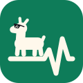

Live



Process explorer
ProcessLama
See what your machine is up to.
ProcessLama lists the processes on your computer as a tree and shows CPU, memory, network and storage use for each one. Rows keep their place while the values update.
- A process tree you can lock while the numbers keep refreshing
- Metrics and history per process and per subtree
- An inspector for files, sockets, threads and security details
- macOS
- Linux
- Windows